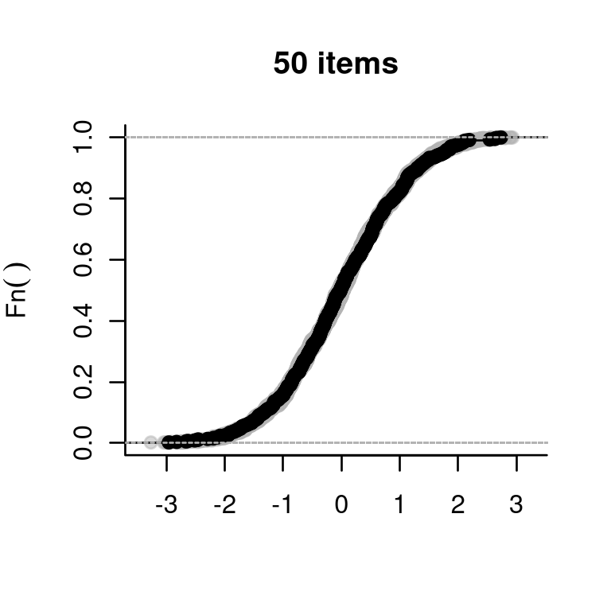
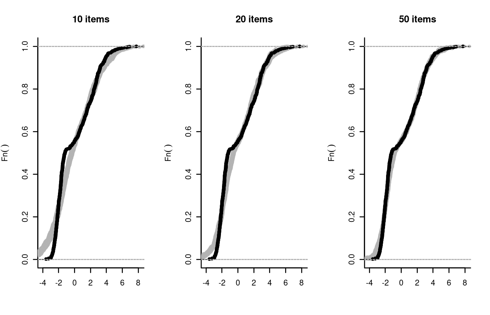
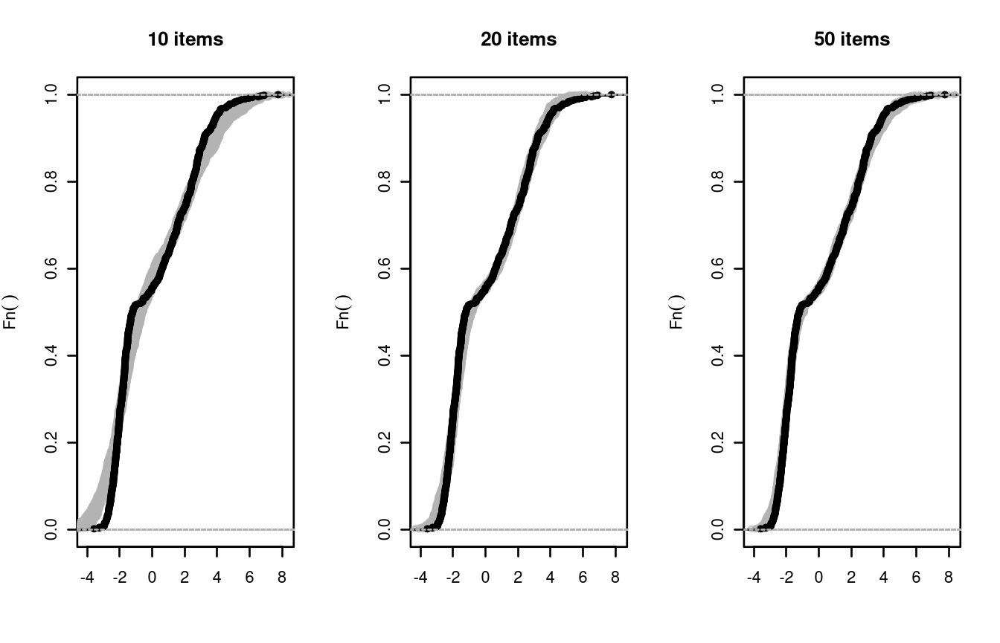

Plausible Values in Dexter
Timo Bechger, Jesse Koops and Ivailo Partchev
2023-03-07
Source:vignettes/Plausible_Values.Rmd
Plausible_Values.RmdPlausible values are random samples from the posterior distribution of ability. Dexter produces plausible values using a straightforward rejection algorithm which was suggested by Rubin (1984), described and improved by Maarten Marsman et al. (2017), and applied in the SurveyLang project (http://www.surveylang.org/).
To see how the algorithm works, one should note that the posterior of ability can be defined as the collection of all values of ability that might have generated the observations. This simple observation suggests the following algorithm: sample a tentative ability from some distribution, then simulate response data from the tentative ability and the item parameters. Since the posterior depends only on the test score, we repeat this until we hit an ability that produces the same expected test score as the one observed for the person. This becomes the plausible value for the person.
In the simple case where the test consists of e.g. 20 dichotomous Rasch items with difficulty \(\delta\), the following algorithm would produce one plausible value \(\theta\) for a respondent with a test score \(x_+=10\).
\(y_+:=-1\)
\(\mathbf{while}\ x_+ \neq y_+\
\mathbf{do}:\)
\(\quad
y_+:=0\)
\(\quad \mathbf{draw}\
\theta \sim \mathcal{N}(0,1)\)
\(\quad \mathbf{for}\ i \ \mathbf{in}\
1:length(\mathbf{\delta}):\)
\(\qquad \mathbf{draw}\ u \sim
logistic(0,1)\)
\(\qquad
\mathbf{if}\ u \le \theta-\delta_i:\)
\(\qquad \quad y_+ := y_+ + 1\)
The algorithm used by dexter is equivalent to the above in the
dichotomous case but it can handle polytomous items as well. The
user-level function is called plausible_values, and takes
as arguments the data source, the item parameters created by function
fit_enorm, and an optional predicate to select a subset of
the data. By judicious use of the predicate the user can do bizarre
things, such as estimate item parameters from one subset of the data and
apply them to compute plausible values for another subset.
Plausible values have been around for quite some time, and have been made popular by many large scale educational surveys. Still, their full potential is possibly underestimated. Having a reasonably fast program such as dexter allows us to play around and demonstrate both the power and the simplicity of the method.
We make a function to simulate a data set, estimate the item parameters, draw 10 plausible values for each ‘person’, and compare their empirical cumulative distribution function (ECDF, shown in gray) with that of the true abilities (the black line):
sim_PV = function(theta, delta) {
nit = length(delta)
sim_func = r_score( tibble(item_id=1:nit, item_score=1, delta=delta))
simulated_data = sim_func(theta)
parms = fit_enorm(simulated_data)
pv = plausible_values(simulated_data, parms, nPV = 10)
plot(x=c(min(theta)-.5, max(theta)+.5), y=0:1,
main=paste(nit, "items"), bty='l', type='n',
xlab=bquote(theta), ylab = bquote(Fn(theta)))
select(pv, starts_with('PV')) %>%
lapply(function(x) lines(ecdf(x-mean(x)), col=rgb(.7,.7,.7,.5)))
lines(ecdf(theta-mean(theta)))
}Let us try it out:

So far, so good. The true abilities were sampled from the standard
normal distribution, which was also used as the default prior in the
plausible_values function. To make things a bit more
exciting, we will generate true abilities from a markedly bi-modal
distribution whilst keeping a normal prior, which will be obviously
misspecified in this case. We will then examine the plausible value from
tests using the first 10, the first 20, and all 50 items simulated
above.
grp = sample(2, 300, replace = TRUE, prob = c(.5,.5))
theta = rnorm(300, mean = c(-2,2)[grp], sd = c(1,1)[grp])
plot(density(theta),bty='l',main='')
The remarkable thing about plausible values is that they will eventually reproduce the true distribution of ability: perhaps sooner, if the prior is specified correctly, or later, if it is not. The price that we had to pay in this example was merely administer a longer test. For a more detailed discussion of this valuable property we refer to M. Marsman et al. (2016).
Observe that the gray bands are not wide, suggesting little uncertainty in determining the ECDF of ability. It may be more realistic to take the uncertainty in the item parameters into account. To do this, we will use a Gibbs sampler to draw 50 samples from the posterior distribution of the item parameters, and we will pick one of these at random each time we produce a plausible value.
First, a little function to accomplish this; note the use of the
use_draw option which enables us to select every fifth
sample from the Gibbs sampler that produced the sample of item
parameters. Note that we have chosen every fifth sample to get rid of
(most of) the autocorrelation in the samples of item parameters.
sim_PV2 = function(theta, delta) {
nit = length(delta)
sim_func = r_score( tibble(item_id=1:nit, item_score=1, delta=delta))
simulated_data = sim_func(theta)
parms = fit_enorm(simulated_data, method="Bayes", nDraws = 50)
plot(x=c(min(theta)-.5, max(theta)+.5), y=0:1, main=paste(nit, "items"), bty='l', type='n',
xlab=bquote(theta), ylab = bquote(Fn(theta)))
which.draw = 5*(1:10)
for (iter in 1:10) {
pv = plausible_values(simulated_data, parms, use_draw=which.draw[iter])
lines(ecdf(pv$PV1-mean(pv$PV1)), col=rgb(.7,.7,.7,.5))
}
lines(ecdf(theta-mean(theta)))
}Now, try it out:
sim_PV2(theta, delta[1:10])
sim_PV2(theta, delta[1:20])
sim_PV2(theta, delta)
The results show a small increase in variance but, with 300 persons,
the item parameters have been estimated very precisely. Note that the
user can accomplish the same goal by calling
plausible_values without parms.
To simulate abilities from a bi-modal distribution we assumed that
the data consist of two groups of subjects; each with a different
distribution of ability. To speed-up convergence to the true
distribution, dexter allow the user to specify a mixture of two normals
as a prior. A mixture of two normal distributions provides a flexible
prior that can be bimodal but also skewed. If we had been aware of the
presence of two groups we could have done even better by specifying a
different prior in each group. To this aim, the
plausible_values function has the option to provide
covariates. These covariates are assumed to be discrete and define
groups. Each group will be allowed a possibly different (normal) prior.
To show how this is done and also to illustrate that it is effective, we
now include the group-membership in the model.
sim_PV3 = function(theta, delta, group) {
nit = length(delta)
sim_func = r_score( tibble(item_id=1:nit, item_score=1, delta=delta))
simulated_data = sim_func(theta)
parms = fit_enorm(simulated_data)
# because our data structure gets multi dimensional by the inclusion of groups
# we switch to a tidy format
simulated_data = simulated_data %>%
as_tibble() %>%
mutate(person_id=row_number(), group=group) %>%
gather(key='item_id', value='item_score', -person_id, -group)
pv = plausible_values(simulated_data, parms, covariates='group',nPV = 10)
plot(x=c(min(theta)-.5, max(theta)+.5), y=0:1, main=paste(nit, "items"), bty='l', type='n',
xlab=bquote(theta), ylab = bquote(Fn(theta)))
select(pv, starts_with('PV')) %>%
lapply(function(x) lines(ecdf(x-mean(x)), col=rgb(.7,.7,.7,.5)))
lines(ecdf(theta-mean(theta)))
}
sim_PV3(theta, delta[1:10],grp)
sim_PV3(theta, delta[1:20],grp)
sim_PV3(theta, delta,grp)
It will be clear that the distribution of the plausible values converges much faster (i.e., with fewer items) to the true distribution of ability.